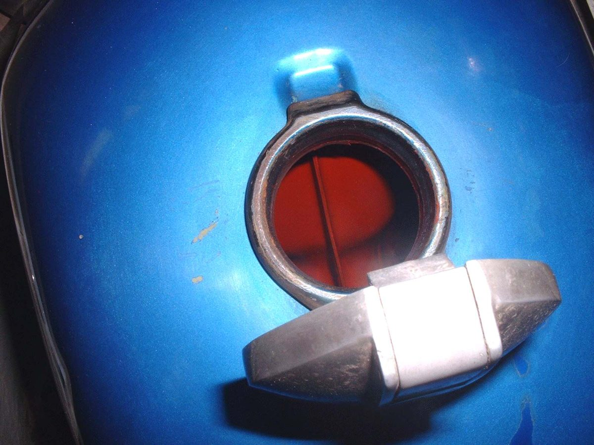
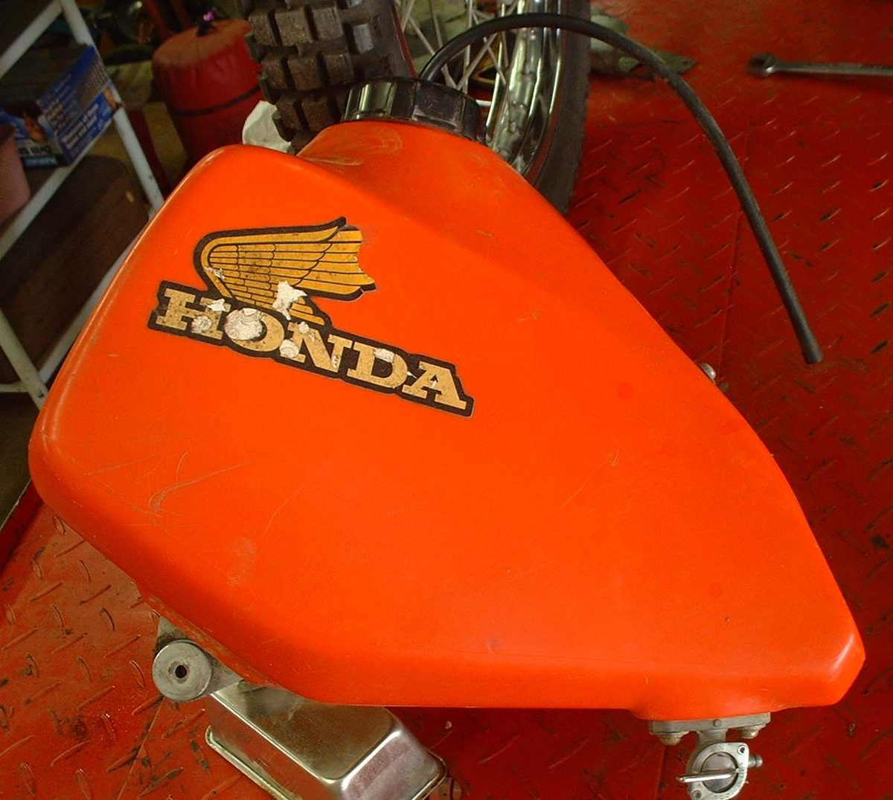
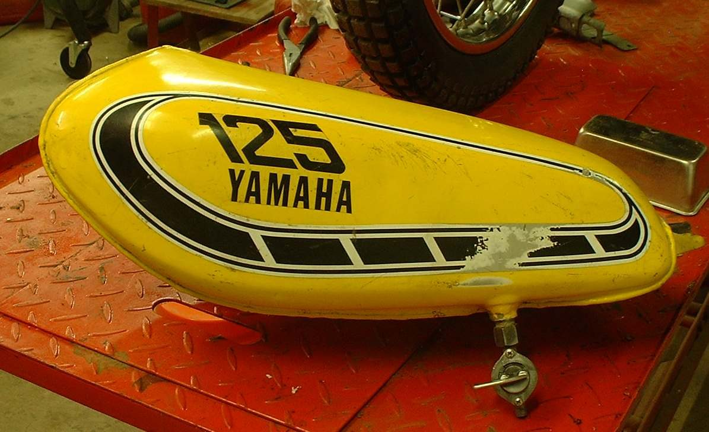
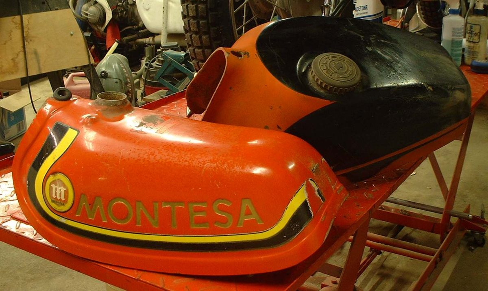

A tank that weeps fuel is a fire risk. Most tanks are steel and leak from rust, a crack or a damaged seam. Plastic tanks crack from knocks and from long sun exposure. A repair can hold, but a leak from rust usually means the inside is thin in many places. Decide first whether repair is sensible, or whether to fit another tank.
Safety
- Do not ride a bike with a leaking tank.
- An empty tank still holds explosive vapour. Never weld, solder or use a flame near a tank that has held fuel. This is a workshop job done by a welder who knows how to fill the tank with an inert gas such as nitrogen. Filling with water does not make it safe.
- Work outdoors with a fire extinguisher close.
You need
- A place to drain fuel into approved containers.
- A repair epoxy made for fuel tanks, if you choose a glue repair.
- Used replacement tank, if one fits.
Steps
- Drain the tank into clean fuel containers. See Drain old or contaminated fuel and Remove a fuel tank safely.
- Find the leak. A wet crack or seam is a repair job. Many tiny pinholes or flaking rust inside mean the tank is near the end of its life.
- For a rusty tank with no leak, see Remove rust from a fuel tank.
- For a crack in steel, ask a welder to repair it with the tank purged of air. Do not attempt it at home.
- For a short-term repair on an old bike, clean and roughen the area, dry it fully and apply a fuel-proof tank epoxy as the maker says. These repairs can last a long time or fail soon.
- Liquid tank coatings can peel and block the fuel tap and filter. A coating does not seal a crack. Use it only on a tank that is not leaking.
- For a plastic tank crack, replace the tank. Glues for plastic are not safe to trust with fuel.
- A used tank from a breaker's yard may fit with small changes. Take the old tank with you to compare.
Check your work
- Fill with a small amount of fuel and leave it for a day on a dry surface. No wet marks should appear.
- Smell for fuel at the bike after the first ride.
If it did not fix the problem
- Still leaking: Fuel is leaking or dripping.
- Loose rust in the fuel: Rust or flakes inside the fuel tank.